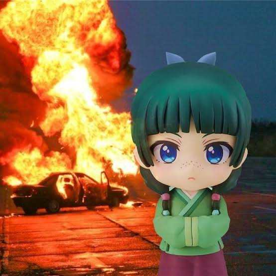

Introdução
@mariakarla
Olá! Meu nome é Maria Karla, este é meu primeiro website onde eu explico sobre meus objetivos, gostos e hobbie; eu tentei fazer uma interface inspirada em aplicativos de redes sociais, especificamente os blog de 2010
, está é uma das minhas primeiras vezes utilizando HTML e CSS, programei pelo VScode e neste projeto aprendi coisas novas sobre o HTML ao tentar formar minha ideia sobre como fazer este website, aprendi a usar o: display:flex; para muitas coisas e a como transformar imagens em circulos.
Espero que você ache a interface interessante, muito obrigada por visualizar meu site!
P.S: Os botões embaixo de cada post não funcionam realmente, talvez algum dia sim ;)